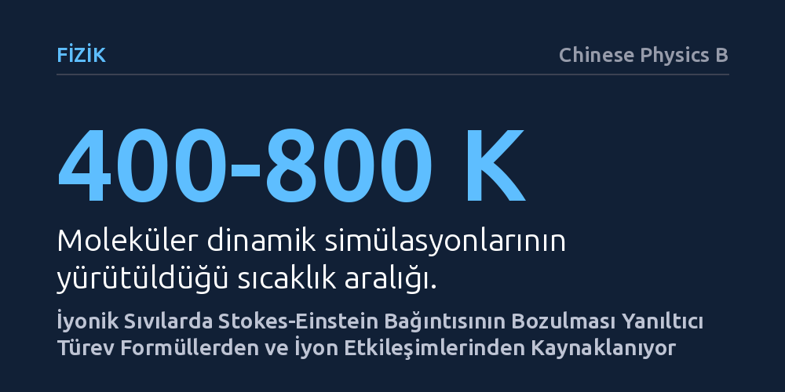

FIZIK · Chinese Physics B · 2026-09-11
Araştırmacılar, iyonik sıvılarda Stokes-Einstein bağıntısının geçerliliğini moleküler dinamik simülasyonlarıyla inceledi. Yaygın kullanılan iki türev formülün orijinal bağıntının yerini tutmadığını ve sapmaların güçlü iyon etkileşimlerinden doğduğunu saptadılar.
Sıvıların akışkanlık ve difüzyon özelliklerini hesaplarken başvurulan kestirme formüllerin yanıltıcı olabileceğini ve moleküler düzeydeki iyon etkileşimlerinin mutlaka hesaba katılması gerektiğini gösterir.

Oda sıcaklığında sıvı halde bulunan tuzlar olarak bilinen iyonik sıvılar, yeşil kimyadan yeni nesil bataryalara kadar pek çok ileri teknolojide kritik bir rol oynuyor. Ancak bu sıvıların sergilediği fiziksel davranışlar bilim insanları için uzun süredir kafa karıştırıcıydı. İyonik sıvılar, oda sıcaklığının oldukça üzerindeki derecelerde bile donma noktasının altına kadar soğutulmuş (aşırı soğumuş) sıvılar gibi davranıyor; tanecik hareketleri beklenmedik şekilde yavaşlayıp karmaşıklaşıyor.
Klasik fizikte bir sıvının içindeki taneciklerin yayınımını (difüzyonunu) ve akışkanlık direncini (viskozitesini) birbirine bağlayan temel denklem Stokes-Einstein bağıntısıdır. Bu yasa, bir taneciğin hareket yeteneğinin ortamın ağdalılığı ve taneciğin yarıçapıyla ters orantılı olduğunu söyler. Uzun süredir bilimsel çevrelerde, aşırı soğumuş sıvılarda olduğu gibi iyonik sıvılarda da bu kuralın geçersiz kaldığı düşünülüyordu. Ancak bu çalışmayı yürüten araştırmacılar, bu köklü kabulün ardındaki hesaplama yöntemlerini sorgulamaya karar verdi.
Araştırmacılar, laboratuvarda ölçülmesi oldukça güç olan mikroskobik hareketleri gözlemlemek için bilgisayar destekli moleküler dinamik simülasyonlarına başvurdu. Hesaplama yükünü dengelerken temel fiziksel davranışları doğru yansıtabilmek amacıyla kaba taneli (coarse-grained) bir iyonik sıvı modeli tercih edildi.
Simülasyonlar 400 ile 800 Kelvin arasındaki geniş bir sıcaklık bandında çalıştırıldı. İnceleme sırasında yalnızca orijinal Stokes-Einstein formülü değil, araştırmacıların hesaplamaları pratikleştirmek amacıyla literatürde sıklıkla tercih ettiği iki yaygın türev formül de aynı veriler üzerinde sınandı. Amaç, bu pratik alternatiflerin gerçekten orijinal formülü doğru yansıtıp yansıtmadığını ortaya çıkarmaktı.
Elde edilen veriler, literatürdeki yaygın kabulün zeminini sarsacak nitelikte bir tutarsızlığı ortaya çıkardı. Test edilen üç formül birbirinden tamamen farklı sonuçlar üretti. Bu durum, literatürde sıkça başvurulan iki türev formülün orijinal Stokes-Einstein bağıntısının yerine güvenilir bir şekilde kullanılamayacağını gösterdi. Bir başka deyişle, geçmişte bağıntının çöktüğüne dair varılan pek çok yargı, aslında teorinin kendisinden değil, basitleştirilmiş formüllerin hatalı kullanımından kaynaklanıyordu.
Simülasyonlar daha derinlemesine incelendiğinde, Stokes yasasındaki hidrodinamik yarıçap değerinin çevre koşullarına bağlı olarak değiştiği anlaşıldı. Bağıntının asıl sapma nedeni ise iyonik sıvıları tanımlayan güçlü elektrostatik kuvvetlerdi. Pozitif ve negatif yüklü iyonlar arasındaki yoğun elektriksel çekim ve itmeler, taneciklerin bağımsız hareket etmesini engelleyip birbirine bağlı (korelasyonlu) hareket grupları oluşturuyor ve klasik bağıntının varsayımlarını zorluyordu.
Bu çalışma, sıvı mekaniğinde uzun yıllardır kullanılan pratik kestirmelerin her malzeme için doğrudan geçerli sayılamayacağını hatırlatıyor. Bilim insanları karmaşık hesaplamalardan kaçınmak için çoğu zaman türev modellere yönelse de, yoğun elektriksel yüklere sahip iyonik sıvılarda bu kestirmeler yanıltıcı sonuçlara yol açabiliyor.
Sonuç olarak Stokes-Einstein bağıntısının toptan geçersiz olduğunu ilan etmek yerine, güçlü elektrostatik etkileşimlerin yarattığı iyonik korelasyonları hesaba katan daha hassas modeller geliştirmek gerekiyor. Bu yaklaşım, gelecekte özellikle yeni nesil enerji depolama sistemleri ve batarya elektrolitleri tasarlanırken sıvıların taşınım özelliklerinin çok daha doğru tahmin edilmesine katkı sağlayabilir.